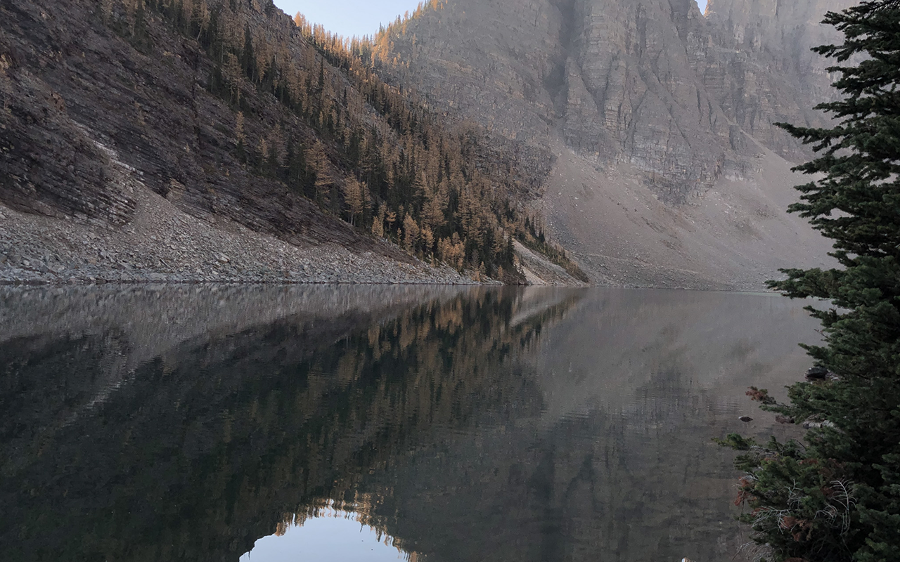

This is Rahim
Gender: Male
Birthday: 14. December 1954
Nationality: Persian
Location: USA
Rahim likes wearing suits
He has a sophisticated look
He has a big beard
Rahim is a professor for Theology
He is passionate golfer
He has 7 children
Rahim likes listening to his granddaughter playing the piano
He adopted two of his children
He is a man of culture
Rahim travelled all around the USA and Canada on a bike
When Rahim was 31 years old he moved to the USA because he felt unsafe in his home country
Rahim's grandson drowned in a lake in a nationalpark in Canada
He fears his family will forget about him when he will pass away
click anywhere to get to deeply know another person